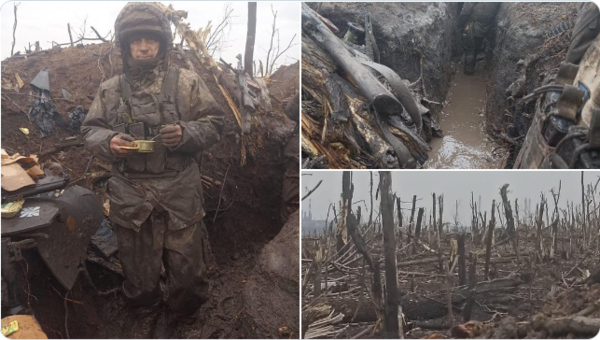
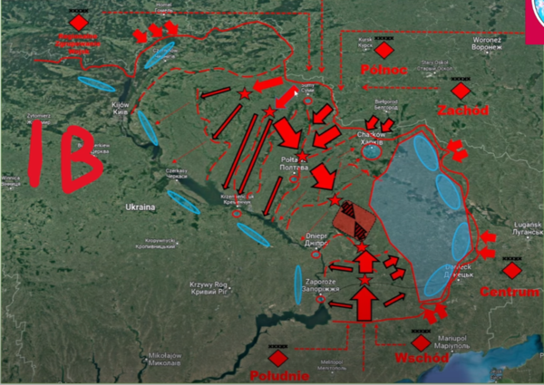
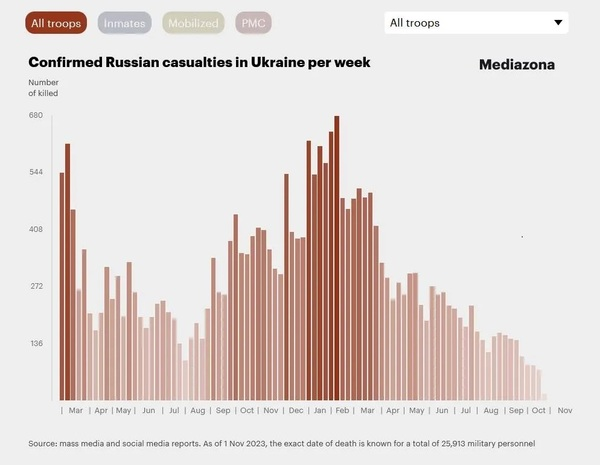
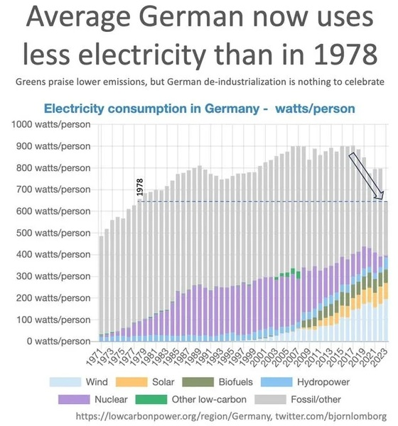
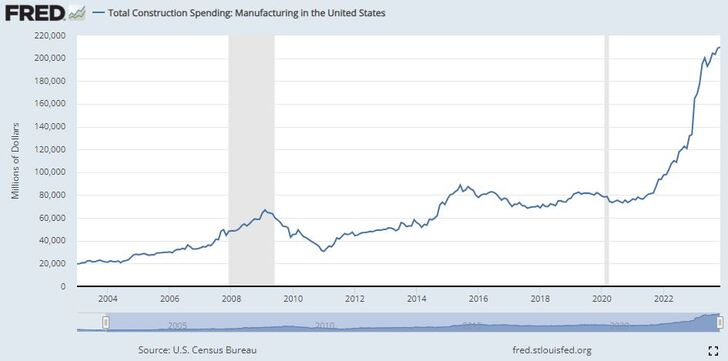
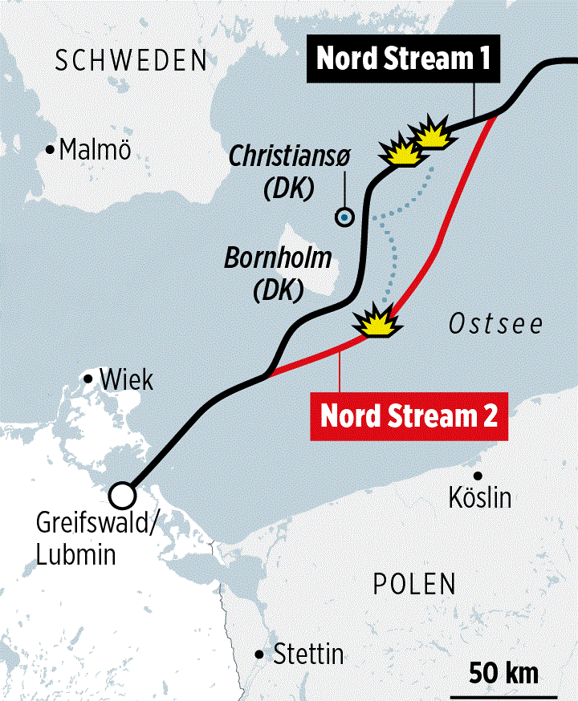

2023-10-31 14:28:00
這裏顯然有兩個迥然不同的可能性：1）Putin政權因爲能力和智慧有限，所以不知道采行最優解；2）俄國有特殊國情，在政略層面否決了戰略和戰術上的考慮。原本我事先就明白自己不懂俄文，對俄國的社會文化和政治體制也遠不如對英美、西歐那樣熟悉，因而最早是接受《可能2》為自動選項（Default），但半年多下來，俄方選擇次優解的案例纍積太多，慢慢地評估必須向《可能1》傾斜。雖然我一直很小心地不推論到底或説死，但博客必須遵從Occam’s Razor，而在一個多月前最簡單的解釋還是《可能1》。
然而經過最新的一些發展，這個根據既有已知事實的客觀評估又必須扭轉過來了。首先是戰場上的一些戰術細節：用幾個三綫營去守幾千平方公里的Kharkov州土地，還勉强可以說是兵力不足前提下不得已的措施，但後來連防衛Lyman也只願意投入兩個營，在Kherson前綫更加離譜，明明就近有著强大的炮兵和預備隊，卻放任烏軍一個減編旅橫衝直撞，這已經不再是“無能”或“錯誤”能解釋的，必須是有意爲之。
在戰略方面，已經忍氣吞聲六個多月，卻忽然做出一連串明顯超過最低需求的强勢運作，包括東烏四州不止正式獨立，而且一步直接兼并；增兵不是5-10萬的最低額，而是一次動員30萬；烏克蘭、波蘭和英國在幾個月前就要求或威脅對俄方做核打擊，但Putin到九月中忽然翻出舊賬，反復高調談自己的核反擊能力，平白賦予美方新的宣傳口實。
綜合以上的新訊息，《可能1》不再能解釋事態發展的脈絡，科學分析不得不接受浮面上似乎較爲錯綜複雜的《可能2》，而且可以據此來進一步倒推俄方的國情内幕。換句話説，今年Putin所有的“次優解”，都可以用一個簡單的假設來解釋，亦即他的優先考慮始終是俄國國内的民情和民意。
過去30年的俄國，已經和當年的蘇聯南轅北轍，不但不再有各級共產黨部作爲組織全民動員的骨幹和管道，就連主流民意也被西方宣傳媒體徹底滲透洗腦。我以前解釋過，有許多跡象指出Putin本人在2004年北約再次東擴之後，就認清昂撒霸權主義的真面目，知道退無可退。但國民思想和社會體制已經腐爛，他不得不審慎緩慢、按部就班地來；而重新教育民衆，是必須先掃清財閥和政棍之後才能顧及的任務。
所以他一直到最近幾年才有餘裕可以立法禁止外國資助的NGO和媒體。而即便如此，在今年二月戰事初起之際，絕大多數的俄國百姓也還不理解歐美的真正目的在於推翻既有政權、然後肢解國家。因而一方面他沒有立刻發起動員或派遣義務兵的政治本錢，必須只靠志願役兵員，也就不可能速戰速決；另一方面他也必須在歐美和烏克蘭各式各樣的敵對和仇恨行爲下委曲求全，才能排除任何藉口，方便國民客觀理解是非對錯的真相。
這裏我想提醒讀者，俄軍和美軍不同，後者是全募兵制，就連國民警衛隊（National Guard）都可以由總統簡單一紙命令派到地球的另一端去進行侵略戰爭，而沒有重大的政治後果。相對的，前者之中招募來的合同兵只充當戰力的骨幹，人數其實不多，而且契約中實戰以六個月爲期，所以仗打到八月就自然會有遠征軍（Expedition Force）兵力進一步萎縮的問題。現在民意沸騰，一致對外的共識已經達成，動員之後外逃的青壯男尚且有幾萬人；若是年初就動員，不但外逃人數可能以數十萬計，内部也必然會有大規模的示威抗議。
人性是一旦選邊站，就不容易換邊；Putin對烏克蘭基礎設施和民衆住宅的溫柔手段，除了在國際外交上有好處之外，也有防止己方國民因戰爭的殘酷而產生主觀反感的效應。
要預防這次針對Kerch Bridge的恐襲，就必須在國内做出戒嚴級別的警戒措施，然而這裏俄國也同樣欠缺中國習以爲常的社會凝聚力。即使是美國，在 911之後各地風聲鶴唳，到處攔車搜查，也是有了明確的災難才行得通的。
總之，Putin一直很耐心地等待全體國民追趕上國際現實，現在俄國民氣可用，冬天將至，烏克蘭繼續搜刮幾乎無人居住的平方公里毫無實際意義，徒然將部隊暴露在前緣的空曠平野，方便俄軍一次性地分割、包圍、消滅，然後北約就會面臨核武升級的誘惑，所以Putin事先警告。以上是我對年底戰事進展的最新預期。
【後註一，2022/10/28】上周美國宣佈將一個旅的101空降師部隊派往Romania，網絡上立刻出現許多“北約準備直接參與烏克蘭戰事”的臆測（例如《The Americans Are Evil》；這裏他的大結論“The Americans Are Evil”是對的，但軍事方面的分析是錯的）。其實這是非專業人士的誤讀；我原本以爲會有讀者來發問，等了幾天還是沒有，乾脆在後註欄簡單解釋一下。
要做出正確的解讀，我們須要先考慮另外兩件事實：首先，Biden在將近半年前就已經派遣82空降師的一個旅到Romania，這次是單純的一比一換防；其次，雖然82和101師都是二戰功勛部隊，並且沿用“空降”“Airborne”這個名字至今，但在戰後漫長的精簡、現代化過程中，其組織和訓練早已分歧化，獲得了不同的任務和特長。其中只有82師還算真正的傳統空降部隊，其官兵必須有傘降的能力和經驗；101師實際上轉化為“空中騎兵”（或稱“空中突擊”“Air Assault”，是現代版的Dragoon龍騎兵），靠著運輸直升機做機動。所以在戰術層面，這兩個師並不具有100%的替換性，只有在戰略層面，才同屬美國陸軍唯二的師級輕步兵單位，沒有什麽重型機械化裝備，可以相對廉價快速地緊急長途部署到戰略前緣。然而正因如此，他們非常不適合單獨對抗現代化多兵種協同的重裝敵軍，頂多只能做幾天或幾周的遲滯作戰。
綜合前述的分析，我們可以簡單看出，美國NeoCon或許有計劃要直接介入戰事，但部署101空降師這件事與其沒有任何因果關係，甚至不算是升級威脅。本周真正值得關注的俄烏戰爭新聞，是烏克蘭的髒彈計劃：我在兩三個月前就報導過烏方正在做準備，現在俄方顯然得到新情報，認爲已經進展到即將施行的地步，所以必須抖出來，警告整個西方政壇，希望智商正常的那一部分人足以制衡NeoCon。
【後註二，2022/10/31】兩天前俄國官方高調指控北溪一二號的爆炸有英國的積極參與，所用的根據被整理列舉在這個英文網站（參見《THE MEDIOCRITY OF BRITISH INTELLIGENCE VIVIDLY DISPLAYED IN STRING OF TERRORIST ATTACKS AGAINST RUSSIA》），有興趣的讀者可以自行詳閲。其中最有趣的（但尚未證實，必須Take with a grain of salt），是在爆炸發生後一分鐘内，當時的英國首相Truss就送了一個短信給美國國務卿Blinken，内容是“Its done!”大家可以將其拿來和昨天英國政府忽然公開承認Truss手機曾被俄方監聽的消息（已證實，參見《‘Total mess’: Liz Truss ‘phone hack by Russia’ needs investigation, say Tory MPs》）做對比參照。
【後註三，2022/11/2】雖然俄國依舊沒有對Truss發認罪短信給Blinken的指控提供客觀證據，但一連幾天下來，英美連否認斥責都不敢，顯然正是因爲俄方對證據引而不發，怕太早撒謊會被立刻反駁揭穿（可能是從1960年U2事件學的乖）。至此可以95%確認這事的真實性，那麽過去這個月有兩條原本莫名其妙的新聞，現在也一下豁然開朗：首先是10月18日，英國防相Ben Wallace忽然緊急飛到華盛頓（參見《Defence Secretary Ben Wallace flew to US for emergency talks with Pentagon due to security concerns》），以討論“Putin的核威脅”和其他“國安事項”；當時就引發質疑，讓人納悶有什麽重要話題敏感到不能通過視頻會議來討論。然後在10月30日，有Truss的前任隨扈泄露消息，說她在首相任期的最後幾天，癡迷於天氣預報裏的風向圖，擔心輻射微塵會吹到首相官邸（參見《Liz Trusss Putin radiation terror》）。在公海突襲外國的基礎設施，當然是戰爭行爲，俄方有核打擊的Casus Belli。此外，Truss在這個不能公開討論的危機爆發兩天後（10月20日）就忽然乖乖辭職，必然也有此事的影響，不確定的只是影響的大小程度罷了。
【後註四，2022/11/29】兩個多月前的烏軍夏秋攻勢一發生，我就指出當地即將進入泥濘季節，會對烏方的進展做出天然限制，有利俄方增援部署，而且新占領大片鄉下農地的烏克蘭士兵必須生活在戰壕裏，會是很慘的Misery。最近這一周，西方媒體普遍報導了這一現象（當然順便扭曲事實，說它一直有利烏方），參見《How Ukraine’s mud became a secret weapon in its defense against Russia》、《Amid the Slog of Mud Season, the Ukrainian Military Keeps Advancing》、《Mud season in Ukraine leaves Russian tanks stuck in mire》、《Russia-Ukraine War: A view from the muddied trenches》、《Harrowing pics show Ukraine troops in knee-deep muddy trenches & blasted trees compared to horrors of WWI a century ago》、《The Bloody Battle For Bakhmut》以及内含的照片（例如下圖）。其實這裏若是要做真正客觀深入的報導分析，就應該專注在今年歐洲的冬天相對較暖，所以一方面稍稍緩和了天然氣的需求量，另一方面也推遲烏克蘭戰區土壤凍結的時程，裝甲集群的攻勢必須等下個月了。

【後註五，2022/11/30】Ursula von der Leyen昨天念稿演講時，内容沒有過濾好，爲了强調有必要沒收原屬俄國的3000億歐元外匯（這似乎是她最近的頭號工作方向，歐盟議會通過議案，將俄國定義為State Sponsor of Terrorism很可能就是為此事做鋪墊），無意間證實烏軍陣亡人數超過十萬人；然而一旦被細心聽衆注意並開始瘋傳，所有的官方記錄都被撤下換爲清洗過的版本，參見《Comparison between the first video posted by Ursula von der Leyen and the second video that was cut》和《Mention of 100,000 Ukrainian soldiers killed during war removed from address of Head of European Commission》。我原本估計雙方戰損比不超過10：1；那麽既然俄軍陣亡人數還只有七千（《BBC》在三月成立一支團隊，專門在俄國各地收集訃聞以做獨立統計，結果始終低於官方數字，也就無法大做文章；這裏我采用較高的後者），烏軍應該在七萬以下，結果實際數目更爲慘烈。考慮到第一階段戰損比並不高，這代表著戰事在四月進入第二階段以來，戰損比在15：1以上；這是世界戰史上極爲少見的懸殊比例，而且俄方是以1：3的兵力來進攻堅固工事，更加匪夷所思。我實在想不到任何前例；如果有熟悉軍事歷史的讀者要指教，請在留言欄做後續討論。
【後註六，2022/12/08】昨天新出現一篇評論俄烏戰爭的文章（參見《Lessons From the U.S. Civil War Show Why Ukraine Cant Win》），拿美國南北戰爭來做類比，從而解釋烏克蘭毫無勝算；這剛好是半年多前我在視頻訪談中就提過的論點。不過我覺得特別有意思的，在於它居然能發表在《Newsweek》上；這是昂撒主流媒體首次登出如此誠實的評論，顯然上個月美國國防部看出戰情即將急轉直下的專業意見，已經被美國執政精英集團所接受，並開始為扭轉宣傳敘事預做些許鋪墊。
【後註七，2022/12/16】這篇正文和後續討論都預期俄軍即將發動冬季攻勢，不過我也解釋了，雖然可以確定烏克蘭占地高位水綫已過，但俄方反攻的時間點卻有很大的彈性，尤其重要的前提是Surovikin必須判斷對方兵力已被消耗到足夠的程度。剛剛看到《經濟學人》對烏克蘭領導階層的專訪（參見《Volodymyr Zelensky and his generals explain why the war hangs in the balance》），恰恰給出了烏方對這些問題的觀點，包括（1）他們同樣預期俄軍將發動冬季攻勢；（2）他們同樣預期俄軍會從北面出兵，再次威脅基輔；（3）他們預期攻勢會發起於一月底或二月初；（4）他們因此而用心保留預備隊，部署在基輔周邊。如果這些預備隊夠强，那麽Surovikin選擇我在留言欄討論第九樓“這個15：1是上限...”所列舉的簡單變招（以北綫為助攻，Donbas為主攻）和將計就計（用少數部隊在邊境恐嚇烏克蘭，同時以絕對優勢兵力步步爲營，逐一剿滅Donbas的敵軍）的機率都會因而上升。
【後註八，2022/12/16】上個月Zelensky的妻子公開要求北約設立軍事審判庭（Tribunal），準備對Putin和俄軍高層做戰爭罪起訴。當時我還以爲只是他們一家的瘋狂，但剛剛注意到英國司法部長（Attorney General）的演講（參見《Legal Response to Russia’s War in Ukraine》），他們居然是認真的。從這裏我們可以看出以下幾點：（1）NeoCon搞顔色革命，有著國際性、全方位的高度協作；（2）國際法體系是他們當前試圖繼續扭曲以完全占用的目標之一；（3）他們之中至少負責搞文宣的那部分，真正相信烏軍即將勝利，俄國即將崩潰，體現出絕對的邪惡與愚蠢的組合。
【後註九，2022/12/18】車臣領導人Kadyrov剛剛在他的Telegram賬戶上以中文發稿（參見https://t.me/RKadyrov_95/3203），呼籲全球穆斯林認清英美為真正敵人，統一戰綫共同抗戰。可嘆的是，居然還有許多華人自願做人類史上最邪惡民族的畜牲走狗。
【後註十，2022/12/21】俄國國防部剛剛提出進一步擴軍計劃（參見《俄罗斯防长绍伊古提议扩军》），想要將總兵力提升到150萬人。在年初時，俄軍規模是101萬；八月通過擴軍法案，準備在未來幾年增長14萬，所以此次的建議是要再增加35萬人。兩次增加的共49萬人，都將是合同兵；原本的20萬（只佔全部兵員的1/5!這是過去這年打得捉襟見肘的基本原因），會因而提升到大約70萬人，而且重點放在空軍、陸軍航空兵、炮兵以及兩栖和空降部隊，足夠同時到境外打兩場烏克蘭（亦即中型）戰爭，或者直接面對北約的一場大型戰爭。俄軍可能是看出北約是紙老虎，所以不必繼續計劃在自己國内打縱深消耗戰，預設戰場轉爲Belarus、Finland和Baltic nations。
此外，義務兵役的年齡會從18嵗調高到21嵗，如此新兵較為成熟穩健，事先具備專業志向和技能，方便軍方挑選適合簽合同的人選。
【後註十一，2022/12/28】昂撒宣傳體系在這次俄烏戰爭中，做爲單向的NeoCon傳聲筒，其論述基本可以預先假定是謊言；即便是所謂的“智庫”（例如Institute for the Study of War，ISW，就是由惡名昭彰的NeoCon專爲戰爭宣傳而設立的）或專家，大多也是製造假新聞的專業戶。不過如果用心深挖，依舊可以找到極少數的專業性文章，包括這一篇（參見《Preliminary Lessons in Conventional Warfighting from Russia’s Invasion of Ukraine: February–July 2022》）來自英國皇家聯合軍種研究院（Royal United Services Institute，RUSI，1831年由滑鐵盧戰役的功臣Wellington公爵設立）的軍事分析報告，雖然仍然受昂撒偏見影響，卻也有不少確實數據細節值得軍迷參考，例如在第二階段雙方都大批量將無人機用於炮兵觀察校射，其中烏方的小型旋翼機平均存活3架次，而固定翼機型則能存活6架次，但整體只有1/3的任務成功，其它除被擊毀之外，是受電子干擾無功而返。從這裏可以看出，中國軍事論壇上將俄軍描述成挨打弱鷄的“共識”，其實是因爲不懂實戰、不掌握真相而做的胡亂猜測。戰爭不是鬥獸棋，沒有任何武器是100%有效的；俄軍對抗北約全力支持下的烏克蘭，當然無法拉出代差，還有著兵力上的劣勢，根本不可能迅速地全面壓倒對方，只能將素質、技術上的部分優勢逐步纍積起來，審慎地轉化為懸殊的殺傷比例，已經是人力可及的極限。大陸許多軍事評論者誇誇而談，事先自我臉上貼金，不但必須事後撒謊狡辯，即使碰巧談到俄方真正的失誤，也類似拿著電腦分析來指責Magnus Carlsen下臭棋，全然忽略後者是世界冠軍這個事實。
【後註十二，2022/12/28】剛剛才注意到三周前波蘭國防部宣佈將在明年初動員徵召20萬公民進行預備役訓練（參見《Poland to train 200,000 reservists in 2023: officials》），這是在將正規部隊從15萬人加倍成爲30萬人之外的額外作爲；很巧的是，這個總額35萬人的擴軍和【後註十】所討論的俄國擴軍計劃規模完全一致，而且發生在後者之前兩周。這裏還有一個有趣的細節，在於其中包含3000名非戰鬥性職務，亦即醫生、護士、駕駛等等，頗類似於新占領地區的軍政府所需。
【後註十三，2023/01/19】本周稍早，俄國進行了新一輪的導彈襲擊（題外話：自十月動員、進入戰事第3或者2A階段後，俄方基本每隔7-10天發動一輪導彈襲擊，早期專注在打擊電力傳輸，後來烏軍投入資源試圖攔截之後，轉為優先消滅防空系統，最近烏方放棄保護次要目標，俄軍又改爲兩者兼顧，展現出靈活的策略調整），其中一枚不幸落在Dnipro市的一棟公寓上，造成罕見的大批平民死傷。烏克蘭政府當然趁機大做文章；然而總統特別助理、實質上的宣傳部長Oleksiy Arestovich居然一反常態，高調出面宣稱該事件源自受烏軍攔截後的導彈殘骸，並非俄國有意襲擊住宅區。他當然立刻被開除，隨即被列入納粹民兵的“烏克蘭之敵”名單上。因爲此事實在太詭異反常，邏輯上不能排除Arestovich看出烏方即將崩盤，所以想學習Draghi提早跑路的可能性。如果後續他成功離開烏克蘭，那麽這個解釋的可信度會大幅提升；反之，如果他被“鋤奸”，那麽一時大意（吸毒太多？）犯錯才是合理的評估。當然還有第三個可能，亦即他受夠了天天撒謊的任務，已經失去理性應對態勢的能力，在死亡威脅下依舊瘋狂地說實話。
【後註十四，2023/01/19】昨天烏克蘭内政部長、第一副部長和分管公安的副部長共乘一架直升機在基輔墜毀身亡。這裏已知的事實是這三人正是主管納粹民兵和警察體系的最高層，所以冒險共乘直升機明顯有違一般法規。其次，有目擊者證實該機在空中就已起火，所以可以排除駕駛員失誤或機械故障，基本不是炸彈就是導彈所擊落。至於動機，有謠言說這三人搜集倒賣軍品的黑料，勒索Zelensky、SBU（情報局兼秘密警察）和軍方合作的貪腐集團，所以被滅口（參見《ARE THE UKRAINIAN POLITICAL ELITE STARTING TO EAT EACH OTHER?》），不過沒有提供實證，只能説是一個有若干合理性的推測，請勿輕信。
【後註十五，2023/01/20】Wagner集團剛剛改行拍電影，以實彈射擊（指火炮）拍攝出品了一部“Лучшие в АДУ”“Best in hell”，把去年夏天Popasna戰役的實戰經驗重現在銀幕上，據稱是描述現代巷戰遠遠最精確的影片（依舊不是100%精確，例如人物太冷靜、場景太乾净等等，但戰術很專業），值得軍迷去體驗。
【後註十六，2023/01/21】今天Medvedev在針對Borrell的囘懟中，正式用“新衛國戰爭”“New Patriotic War”來描述當前以烏克蘭為前綫與北約的對抗（參見《Medvedev calls war with Ukraine "new Patriotic War"》），大家可以拿來與三個月前我在《龍行天下》節目中所説的“第三次衛國戰爭”做對照。
【後註十七，2023/02/03】昨天上《龍行天下》節目（參見《俄烏戰爭會擴大嗎？"》）期間，提到過去這一年Putin的戰略政略總目標有三個階段的轉折（和“特別軍事作業”的階段並不完全吻合），可能沒有説得太清楚，所以在此重述一次。去年二月戰事初起，Putin的任務在於防止北約擴張到烏克蘭，同時避免俄國本身被歐美的經濟金融戰所擊潰，所以威嚇逼和以儘快結束戰鬥，是值得冒險的投機。到了四月，烏方明顯拒絕投降，而俄國的經濟態勢遠好於早先的預估，於是他在軍事上繼續遵守人道原則，但改爲持久消耗戰，不在乎攻城略地，只消耗烏克蘭的有生戰力，以求一方面激發國内的國族認同，另一方面也鞏固第三世界的同情與支持。經過夏秋的攻防，北約不斷升級支援烏克蘭的武器供應，Putin在十一月前後確定歐美的軍工產業和整體國力的衰退程度遠超預期，原本計劃的國土防禦戰略不再有必要，可以轉守為攻，以有限出擊威懾北約東擴，於是一方面推動軍工生產，擴充產能至全面戰爭的層次，以求在烏克蘭戰場上預先消耗北約的武備，另一方面先動員30萬人，解決當務之急，然後增兵50萬，提供未來和北約正面對抗的本錢。換句話說，俄國已經進入一個介於冷戰和三戰之間的狀態（“溫戰”），未來這一年，即使烏克蘭因人力耗盡而崩潰，俄方依舊會維持極爲强硬的攻擊態勢；我很樂意等著看看Neocon騎虎難下的窘態。
【後註十八，2023/02/08】曾在1969年揭發越戰美萊村屠殺（Mỹ Lai massacre）的名記者Seymour Hersh剛剛發表新調查報告（參見《How America Took Out The Nord Stream Pipeline"》），指出北溪爆破案是Sullivan指揮CIA在挪威支援下所為；目前還不能確定内容的準確度（尤其沒有提及英國的參與，讓我有所保留，畢竟故意泄露扭曲的故事細節，以破壞爆料者的名譽，是CIA的故技），但值得大家參考。
【後註十九，2023/02/09】雖然Seymour Hersh的整體敘事依舊有待進一步驗證，他所説的：爆破北溪的引信是由來自挪威的P8海巡機提早幾個小時用專門設計的聲納浮標來引發，這個細節已有旁證，參見《Recap of the Nordstream2-night cred Monkey Werx US."》。
【後註二十，2023/02/10】《MoA》並不認同Seymour Hersh所説的炸藥安裝時間點；軍迷可以參考《Some Small Corrections To Seymour Hershs New Nord Stream Revelations"》。
【後註二十一，2023/02/10】下圖來自一名波蘭軍官的自媒體賬戶，是他根據軍事常識所推測的俄軍可能攻擊方向，基本和過去幾個月我在《龍行天下》所談的相吻合，列印在此供讀者參考。

【後註二十二，2023/02/12】過去一年，我反復提醒讀者，烏克蘭享有北約C4ISR體系的全力支持，但《Washington Post》的這篇報導（參見《Ukraine’s rocket campaign reliant on U.S. precision targeting》）依舊值得注意，因爲它首次承認“Ukrainian officials say that they almost never launch HIMARS rounds without detailed coordinates provided by U.S. military personnel situated elsewhere in Europe”“基本所有的HIMARS攻擊目標都是美軍代爲指定的”。當然主流媒體願意招供，是不得已的事，因爲此事在去年11月就由駭客集團“Joker DNR”獲得美國國防部下屬的National Geospatial-Intelligence Agency （NGA，國家地理空間情報局）機密文件證實了，參見《The Kids Are Not Alright》
【後註二十三，2023/02/22】歐美媒體喜歡譏笑俄系武器便宜粗糙，以致中國民間被洗腦後也流行“傻大黑粗”這個形容詞。實際上的差別在於俄國的武器從200多年前的第一次衛國戰爭之後，就一直是爲抵抗超級强權和其所掌控的聯盟而設計的，歐美則主要用來打第三世界殖民地。有軍事常識的讀者可以看一看這個視頻《RUSSIAN 2S1 GVOZDIKA VS. AMERICAN M109 PALADIN》，對比一下俄美自行火炮的操作程序，尤其注意射速、人手配置、訓練要求、以及排烟能力等等。M109 Paladin是美軍現役裝備，也是國軍正在求著購買的“世界先進”武器。
【後註二十四，2023/02/25】Putin的年度國情咨文（參見《俄罗斯总统普京2023国情咨文》）發表至今已有三天，但很可惜的，華語世界沒有出現任何一個能做出精確總結的評論，所以我覺得有必要在此簡單提示。Putin講話的重點，在於俄烏戰爭只是護盾，是爲國家復興提供外在條件的諸多手段之一；評量國力和治理水平的最終標準是經濟民生，而真正的長期復興基礎還是全民向心力，反映在國家民族意識和社會傳統文化之上。大家可以拿這些論點來和本文【後註十七】以及《從SWIFT制裁俄國，看中國的對應之道》【後註三十七】的討論做對照。
【後註二十五，2023/03/03】烏克蘭的一名軍官在上周公佈了虜獲的俄軍新作戰準則（“Manual”，參見https://twitter.com/Tatarigami_UA/status/1629722073487613953），很值得軍迷去瞭解。簡單地説，BTG被轉化為“Assault Detachment”“突擊群”，削減了機動運輸以及中遠程野戰防空和反坦克火力，大幅加强了無人機、2S9迫榴炮、RPO雲爆彈和30mm榴彈槍的配備，並將支援火力控制權極度下放（例如重迫擊炮也下放到排，榴彈炮下放到連或排，空軍下放到營級）。這個轉變似乎是去年九月到十一月之間完成的，極可能參考了Wagner在Popasna的作戰經驗，參見【後註十五】。
【後註二十六，2023/03/19】國際刑事法庭（International Criminal Court，ICC）以極爲可笑的藉口（從烏東被炮擊八年的地區撤離孩童）起訴Putin。這裏的實際作用當然是ICC對自身信譽的閹割，連帶著也進一步打擊西方主導的國際機構和秩序，那麽爲什麽歐盟的深層政府會强行推動這件傻事呢？繼續對民衆洗腦當然是一個考慮，但我想指出此事還有一個更陰險的用意，亦即即使有歐洲國家在當前的抗議風潮下發生政權更替，新政府想要和俄國和解也無從著手，因爲Putin已經被司法體系定義為戰犯，任何接觸都會是非法的。
【後註二十七，2023/03/20】兩年前ICC選擇英國籍的Karim Khan出任總檢察長時，博客曾討論他的職業生涯，發現他主要作爲被告律師，在非洲國家聲譽不錯，因此這次為深層政府和昂撒集團賣命演出，有些不尋常。結果反建制派網紅Kim Dotcom指出一個巧合（參見《Twitter》），Karim的弟弟Imran Ahmad Khan原本是英國國會議員，後來因爲性侵男童而入獄，卻恰恰在上個月底順利減刑提早出獄，參見《Paedophile former MP released from prison》。
【後註二十八，2023/06/16】昨天上《龍行天下》節目（參見《23.06.16【觀點│龍行天下】烏克蘭大反攻是真的嗎？》）時，提到烏軍經過12天的第一波攻勢，唯一的戰果是在南綫東段有4-5公里的進展（在Velyka Novozilka鎮的南面郊區，原本是俄軍的突出部），包括幾個村落。然而這裏其實是俄軍防綫的前沿地帶，有17公里作爲緩衝，完全符合《蘇聯陸軍作業及戰術準則》中，師級野戰防禦陣地的標準配置（亦即非特殊要塞地帶）；這個前沿緩衝地帶，軍事術語叫做“эшелон безопасности”，一般翻譯為“Security Echelon”“安全警戒梯隊”，參見前述作戰準則的第六章第二節、以及98頁的示意圖。
【後註二十九，2023/06/24】Wagner公然反叛，震驚世界，留言欄發問者眾，我在此統一評論作答。不過新聞剛發生，訊息既不可靠也不完整，不足以論斷確認有多少非理性因素存在，請仔細閲讀，理解邏輯分析條路，不要憑浮面印象妄做非黑即白的定論。
首先請注意，此事至今還只算兵變（Mutiny）而不是政變（Coup），這是因爲Wagner並沒有試圖（事實上也不可能成功）進軍Moscow或威脅Putin和中央政府，所針對的依舊只是國防部系統和Shoigu。與此同時，Prigozhin仍然專注在作秀，不論是懟俄國正規軍體系或安撫自家士兵，行爲本質總在於以愛國為招牌煽動輿論，那麽如果行動對俄烏戰事有太大的戰術層面影響，立刻就會喪失正當性。所以總結起來，持續鬧大而對戰局扯實際後腿、甚至動搖國本的機率實在不大。
冷靜旁觀者眼中真正未知的，在於事先有沒有Putin的知情同意。故意容許兵變，並非絕無道理，首先可以在當前壓倒性戰術勝利消息不斷傳出的前提下，鼓勵北約繼續既有的添油戰法而不是迅速大幅升級，以確保溫水煮青蛙的戰略能順利持續。我在上周《龍行天下》節目（參見《23.06.16【觀點│龍行天下】烏克蘭大反攻是真的嗎？》中已經明確强調，在本次“春季攻勢”徹底暴露了烏方在軍事上的絕對劣勢之後，北約因絕望而進一步升級、由波蘭下場參戰，是俄方在戰略上的最大隱憂。Wagner兵變為昂撒宣傳體系提供了絕佳的撒謊題材，特別方便轉移歐美民衆對實際戰爭結果的注意力（在喪失公信力並被明確標識為“Fake News”之後，轉移民衆注意力已經成爲整個昂撒主流媒體的首要任務，例如Titanic旅游潛艇在6月18日出事，明明美國海軍在第一時間就監聽到内爆Implosion，卻故意先不做報導，假裝還有救，大肆炒作了幾天，其用意很明顯是因爲Hunter Biden剛好即將對逃稅認罪，必須有其他的熱門新聞當頭條；請注意，認罪的事到6月20日才公開，所以主流媒體並不是事後被動袒護，而是事先就主動統一協作），消弭三戰危險於無形。至於事後能名正言順地以相對嚴厲並廉價的手段解決一群原本就桀驁不馴、現在又已坐大的驕兵，將他們所依賴的國内民意支持度釜底抽薪，反倒是次要的考慮。
當然我們也還不能否決Prigozhin純屬腦子發熱的可能性，亦即此次兵變是他和Wagner決策集團反復懟國防部太多次之後的非理性發癲（可能有幕後Putin下令收縮Wagner的因素；這也是幾個月前我在受訪問時預期過的議題），不過“兵諫”一般只會有反效果，Shoigu因此下臺的機率不大。整體來看，我們可以確定此事若不鬧大，其實對俄國是件好事，只有内情還有待繼續觀察，要看最終如何收場，尤其是Prigozhin個人的結局，才能蓋棺論定：如果他被槍斃，顯然Putin並不是在下大棋；反之若是他順利潛逃（UAE？）或獲得赦免，那麽明顯是場戲；但最可能的是表面上下獄，這個内情就要撲朔迷離一段時間了。
【後註三十，2023/06/24】最新消息是Prigozhin在任何人喪命之前（至少俄國正規軍沒有開槍）就果斷結束兵變，這果然越來越像是在演戲（因爲“内戰”還能避免“過激”反應，這要在動亂之初立即貫徹到好幾個城市的基層士兵層面，顯然不是易事）；我們等著看Putin如何處置他吧。
【後註三十一，2023/06/24】又有消息傳出，Prigozhin將接受Belarus的政治庇護；這的確是比總統特赦要更漂亮完美的結局，否則公開叛變還一點事都沒有，有些説不過去。但選擇Belarus而不是UAE，對聰明人來説，依舊擺明了Putin對“叛徒”Prigozhin的親善和體諒。
【後註三十二，2023/06/25】兵變事件的演化異常迅速，不到48小時，俄方已經宣佈要將Wagner收編入正規序列。正如我在一開始的分析，若是沒有這次兵變把Wagner的民意支持釜底抽薪，如此輕鬆又强勢的收編是不可能的。於是英文自媒體上（參見《RUSSIA’S ACADEMY AWARD WINNING PERFORMANCE FOR BEST COUP, PRIGOZHIN SCORES BEST ACTOR》；相對的，主流媒體純屬假新聞，不值一提）終於有人領悟到兵變的幕後真相。
至於華語世界，博客堅持事實和邏輯、以科學方法探索真相，很不幸地似乎是獨一無二的存在，而論證的普適性、永久性以及正確性，卻只能是這個求真態度的結果，於是一般媒體的所謂評論，實質上成爲娛樂性的聊天扯淡，只博聽衆一時之爽；若不抄襲復讀，就只能依靠群衆的記憶迅速消退或者邏輯能力匱乏來掩飾自己的淺薄和謬誤。正是基於這個本質上的差異，博客不但可以、而且必須要求新讀者復習舊文；畢竟把公共事務的討論當成娛樂事項，既是愚民的本能反應，也是西方體制迅速腐朽的重要背景因素，所以關心長遠國運的知識分子絕對必須全力排斥避免。
【後註三十三，2023/08/17】我從俄烏戰事一開始就反復指出，烏克蘭眼中的主戰綫其實在於宣傳，軍事行動反而是配合宣傳需要不得不勉强爲之的輔助行爲。既然有以抹黑和洗地為專業的歐美主流媒體兜底，憑空捏造和指鹿爲馬自然輕鬆寫意、順口成章，以致於只要烏克蘭高官嘴巴在動，就基本可以確定他在撒謊，以下是一個最新案例。
在俄方因對方完全忽視條約責任而退出黑海運糧協議之後，昨天竟有一艘貨輪“Joseph Schulte”號從Odessa出發，駛離黑海，於是所有西方媒體大肆慶祝“打破俄軍封鎖”、“人道主義勝利”，無數附庸傳媒忠實翻譯復述。但如同以往成千上萬的歐美謊言，細節完全經不住推敲。首先，Joseph Schulte是一艘集裝箱貨輪，不是運糧船；其次，它在今年2月入港卸貨之後，就被烏克蘭當局非法扣押（沒有正當理由，應該是爲了索賄），連船員都驅逐出境；第三，這艘船雖然由德國Bernhard Schulte集團負責經營，實際產權卻是中國政府通過銀行所擁有的國有資產，在香港注冊；再加上歐美主流媒體對船上是否載貨，顯然有意地語焉不詳，考慮到烏克蘭至今基本只有農產品和礦產品可以出口，烏方的敘事絕無可能成立。
那麽事實真相是什麽呢？其實從上述的細節已經呼之欲出：中方資產被烏克蘭海盜（穿警察制服和西裝的海盜一樣是海盜）扣押之後，外交部（雖然已知實際公開出面與烏克蘭交涉的是香港官員）必然在幕後積極營救，但半年下來沒有結果，只能是烏方待價而沽，直到北約宣傳體系有需要刊登“打破俄軍封鎖”的頭條，才終於放行。然而這裏最令人玩味的是俄軍在行動上居然完美配合，所以幕後必然有他們很在乎的第三方協調者；但俄國官方和媒體卻又都惜字如金、假裝無視，徹底違反其行爲慣例，連那個第三方是誰，也只通過一個民間軍事網站（DIMA，參見下圖）泄露。據我所知，全世界既喜歡如此低調，又能向俄國做出這些要求的，只有一個國家，還剛好是資產被扣的苦主，這樣的三重巧合，當然賦予這個解釋極高的可信度。
以上的分析，是我參考了《Why This Ship Was Allowed To Leave Ukraine》一文所討論的事實證據和結論後，補充的邏輯推演。原文還提到其作者私下接觸了Bernhard Schulte的内部人員，得到直接確認；不過這是一面之詞，單獨地看證據力並不太高，反而是間接的邏輯辯證更加嚴謹。此外，從Yellen不受中國外交部款待，反過來玩成與民間女公知共享佳餚的“親民”舉動，到烏克蘭海盜放行中國被擄船隻，被説成“打破俄軍封鎖”，可以看出歐美”精英“僅存的那一點腦細胞，基本都用到公關造假、欺騙國内外民衆去了，中國金融、教育和學術界偏偏還在積極引進“西方先進經驗”，實屬愚不可及。
【後註三十四，2023/09/21】我曾反復評論，只要烏克蘭官員嘴巴在動，就可以確定他們在説謊，這裏又多了一個例證：Zelensky前天在聯合國給演講，因爲聽者寥寥，烏克蘭官方新聞剪接了滿座的存檔視頻播出，參見《LETS FACT CHECK: Ukrainian media added more audience to Zelenskyys UN speech???》。
【後註三十五，2023/10/05】美國陸軍戰爭學院最近發表一篇新論文（參見《A Call to Action: Lessons from Ukraine for the Future Force》），認爲俄烏戰爭反映了美軍在多方面落伍的事實，亟待全面反思並重組。如果俄軍真如主流媒體所説的那樣不堪一擊、死傷慘重，美軍内部專業研究會做出前述的反省嗎？
【後註三十六，2023/11/07】下圖是來自Mediazona的俄軍陣亡人數最新統計數字，號稱至11月1日共爲25913人。這裏有兩點要提醒讀者：首先Mediazona是堅決反對Putin的帶路黨媒體，所以其統計細節絕對是盡力讓俄方難看，很可能包含了東烏民兵和其他非正規部隊，所以25913應該被視爲實際數字的上限。其次是即使由敵對方來做統計，俄軍也明顯在今年2月之後越打越好，在維持前綫戰鬥强度和對敵殺傷的前提下，每周陣亡數字仍然持續下降，即便烏克蘭在6月開始“春季大反攻”之後也不受影響，最新數據已達到開戰以來的最低。

【後註三十七，2023/11/13】過去兩年來我一直試圖解釋，俄方在這次戰爭中其實打得可圈可點，尤其越到高層次的政經外交戰綫越是亮眼。現在被“軍事專家”們捧在殿堂上膜拜多年的以色列也開打了一個月，其部隊在現代武器環境下面對弱了千倍都不止的對手表現如何？經濟層面的對比當然更重要：俄國在西方和日韓的全面制裁下，第一年的GDP只下降了2.3%，還順便完成了整個經貿體系脫離歐美的壯舉；現在以色列有著美國的無限援助，GDP卻被預估會下降11%，參見《Israels Economy Set to Shrink 11% as Hamas War Escalates: JPMorgan》。
治理國家和管理經濟顯然並沒有鍵盤俠所想象的那麽容易，尤其在戰爭狀況下。原本一切分析，都應該是基於事實和邏輯的嚴謹辯證，這是博客一貫的原則。可笑的是，越是沒有依據完整認知架構對相關事件做過千百個事先預測、並獲得超過隨機結果至少一個數量級以上勝率的人，反而越是喜歡在公共論壇上妄做空口論斷。
【後註三十八，2024/01/13】我在過去兩年反復强調，俄烏戰爭的最大輸家，除了烏克蘭以外，當屬去工業化過程被急劇加速的德國。下圖是德國的人均發電功率歷史，因Merkel去核政策，在2017年之後逐步從900W下降至2022年的800W，但其後一年之内就劇降到640W（損失主要來自天然氣，在下圖中是灰色長條的一部分），甚至低於1978年的水平。

德國去工業化的最大直接受益者，當然是美國。下圖是我在多次演講和博文中提起的美國工廠建設花費，從2022年初的每年800億美元（年度化Annualized的數字，原始數據是每月65億）漲到2023年11月的每年2100多億（相當於每月180多億）。

然而另外一個主要受益者卻很少受到關注，亦即俄國。從下圖可以看出，2019至2022年，俄國機床總產能（不是機床生產機械元件的裝機量，而是生產機床的產能）增加71%，鍛壓機增加117%。俄國與美國的差別，在於德方廠商將產能直接搬遷到後者，而前者則是不再從德國進口機械產品，所以必須尋求自主替代。
【後註三十九，2024/02/24】自整整兩年前俄烏戰爭開始之後，我們反復看到德國在賣國政客主導下，强勢超越此前的作死冠軍英國，成爲先進工業國中最大的輸家，尤其在化工、冶金、機械、汽車等等重要產業都發生急劇的去工業化，產能向美國大幅轉移。今天看到一篇新聞，連瑞士光伏公司Meyer Burger也決定關閉在德國的既有廠房，也就是歐洲最大的光伏生產厰，轉而在美國的Colorado和Arizona各新建一個生產基地（參見《Meyer Burger prepares to shut down plant in Germany》）；此事尤其有趣的觀察點，在於Meyer Burger將此決定歸罪於中國，《欧洲最大光伏组件厂宣布即将关门，CEO怪上中国》，可以簡單看出中美宣傳能力的差別。
【後註四十，2024/05/17】繼廉價鈾礦來源Niger（原產國只獲得產出價值的0.4%）反叛殖民宗主法國並將其驅離之後，法國的太平洋殖民地New Caledonia也發生反法獨立運動（參見《Violence rages in New Caledonia as France rushes emergency reinforcements to its Pacific territory》）。本次事件同樣是受俄國所引領的當代反殖民潮流所鼓舞引發，但因爲New Caledonia的鎳礦產量為世界第四，財團的商業利益極大，使當地名義上的人均GDP超過3萬4千美元，甚至高於日本和南韓，因而可以簡單預期法方將立即强力鎮壓，成功獨立的前景非常不樂觀。
【後註四十一，2024/05/28】法國在New Caledonia的慘烈殖民史，雖然很典型，但並不廣爲人知。這裏（參見《Frances Fear of China taking over New Caledonia 🇳🇨 II Kanak perspective II》）是一個簡單的視頻總結，可供讀者參考。
【後註四十二，2024/10/07】我反復强調過歐美援烏的所謂先進武器，其實都不足以與俄軍拉出代差，剛上場時出其不意或許還能有短暫的功效，幾個月下來必然會被反制，其所謂“神奇”基本全靠吹。這其中被吹捧得最高的，莫過於HIMARS，現在美方自己承認（原文在付費墻後面《The Abandonment of Ukraine》，所以在此節錄相關段落）“A year ago, HIMARS was the most in-demand system on the battlefield. Now it has a success rate of less than 10 percent because of Russian innovation in electronic warfare.”也就是HIMARS的命中率已經低於10%，考慮到中方的電子戰能力更遠在俄軍之上，這個數據特別值得還在幻想以武拒統的綠營參考。
【後註四十三，2024/10/09】北溪被炸之後，昂撒情報單位反復通過主流媒體散發各種自相矛盾的無厘頭假新聞以混淆視聽，其目的顯然在於遮掩美方的責任。我在兩年前《龍行天下》節目中已經解釋過，北溪管道被炸開處水深約百米，多個炸點所需炸藥和固定架重量高達數噸，而Scuba潛水最深只達40米，極少數專業深水作業頂多60米，超過這個深度就只限超級大國海軍以及兩三個全球性石油鑽探公司擁有所需的深水呼吸裝置，而且還要至少數千噸級、配備大型吊架的專業船隻配合支持，根本不關民用游艇什麽事，因而可以簡單排除臺面上的所有謊言。然而整個事件真正神奇之處，在於西歐媒體界的集體消聲，兩年下來居然沒有任何一個新聞單位敢代官方做出簡單基本的分析調查，來打破那些低劣的謊言，一直到本周終於有個例外：丹麥的獨立報紙《Politiken》（英文轉載參見《American warships were operating in the area with their transponders switched off, Politiken has reported》）送出一名記者到離爆炸處最近的Christianso島，采訪了當地的Harbormaster港口長John Anker Nielsen，發現爆炸前幾天，果然有一艘中型美軍艦隻在該水域積極作業，不但故意關掉一切雷達及衛星定位裝置，而且還主動驅離當地船隻；單憑這個證詞，真相就已呼之欲出。

【後註四十四，2024/10/14】我在前兩個月的《龍行天下》節目中曾經論證，因爲其敘事不合理、無必要、缺根據，所以可以判斷所謂伊朗批量出售彈道導彈給俄軍的報導（一整個系列主要來自《Reuters》）是預先造謠，以便為開放烏克蘭使用美國導彈攻擊俄國本土做鋪墊，現在有實話者聯盟英文總舵的成員也做了詳盡的分析，有興趣的讀者請參考《Fake Reports Of Missile Transfers To Russia Are Used To Sanction Iran》，他還指出這個謠言對以色列想拉伊朗下水的企圖也有幫助，但我認爲那是相對次要的考慮。
【後註四十五，2024/10/23】去年Niger發生反殖民革命，博客曾評論其在軍事上受俄烏戰爭的激勵、在經貿方面則有中國來兜底，才有了與殖民帝國翻臉的底氣；這裏有兩則今年六月的新聞可供佐證（分別是中方為Niger所建的輸油管完工，但因叛軍和鄰國阻撓，難以啓用，參見《Coup-hit Niger was betting on a China-backed oil pipeline as a lifeline. Then the troubles began》，以及Niger軍政府驅逐法國國營企業Orano，將鈾礦收歸國有，參見《Niger revokes French nuclear group’s licence at major uranium mine》），當時沒有在博客提起，現在補發。
【後註四十六，2024/10/24】上個月以色列Mossad利用名義上是分別是台灣和日本品牌的傳呼機和對講機，内藏炸藥，襲擊了Hezbollah的幹部群；當時中方輿論一面倒地宣稱必然是台灣廠商與以色列合作的結果，我很簡單地在《龍行天下》指出兩點：1）不可能，原因不是臺方的操守值得信任（雖然事後證明那個廠家的董事長並未説謊），而是因爲無法保密，所以Mossad不可能如此操作；2）無視前述事實（尤其忽略日本廠商）與邏輯，無力批駁卻徑行做出一廂情願的錯誤結論，是反理性的愚蠢行爲。其實當時我雖然沒有明言，但心下預期真相有可能會很快被透露，這是因爲以色列極爲囂張，Mossad的“成就”向來都被拿來當作宣傳案例以發揮嚇阻作用，例如2010年Hamas高幹Mahmoud al-Mabhouh死在Dubai旅館的暗殺事件，也是很快大批細節被公開揭露，連執行任務的Mossad殺手團隊照片都曝光了（參見《Dubai Hamas killing: fraudulent passports fuel Mossad suspicion》）。果然這次也是如此，一個月後就由主流媒體《Reuters》出面吹噓（參見10月15日發表的《How Israel’s bulky pager fooled Hezbollah》），解釋了衆多細節，例如炸藥藏在特製的電池裏，所以無懼開機檢查；機型是Mossad自行設計生產（連電池和主機板都必須專門特製，民用生產綫也就毫無利用價值），與台灣和日本廠商的“合作”，純粹是爲了在後者的網站上列出這些專爲欺騙Hezbollah而無中生有的機型，避免在銷售過程中露出馬脚（請注意，我並沒有說這篇《Reuters》的文章絕對可信，但它確實提供了完整而且符合一切已知事實的敘事和邏輯，從而充分滿足Russells Teapot的要求，於是根據邏輯辯證規則，它也就成為當前的階段性預設Default真相；例如文章的關鍵論述之一，正在於它指出了“特供型號”這一件細節：如果Hezbollah購買的這兩批傳呼機和對講機的確是特供品，那麽其論述就得到强力佐證；相對的，反方完全可以針對這些細節去尋找反證，只要能找到同樣機型在任何國家的商用管道銷售過的記錄，這篇文章的公信力自然被徹底摧毀；反之，如果找不到反證卻還堅持嘴硬，其内涵自然等同兩歲嬰兒的哭鬧，而且是在公共事務討論中的哭鬧，除了其父母之外，沒有理會的理由；可悲的是，這必將是絕大多數網民的反應，也是爲什麽我說只有能遵守邏輯辯證規則的人才有資格參與公共事務的討論）。
不過中國學術和媒體界的腐敗極爲嚴重，對事實真相毫無尊重，被打臉之後，一般故意假裝沒有發生過（例如上述的這篇《Reuters》文章，我特意等了一個多禮拜才在此討論，給他們機會證明自己是否在乎事實真相，結果果然所有當初口沫橫飛、言之旦旦的作者都集體噤聲，以遮掩自己的錯誤；作爲對比，我才剛剛在《開發太陽系的經濟效益》留言欄27樓的回復示範過求真者有錯認錯的正確態度）或者狡辯卸責（例如兩年前席亞洲對俄製迫擊炮彈辨認錯誤被指出之後的連串謊言），甚至反過來打壓提供事實證據的論述（參考中科大和袁嵐峰的行爲模式），其目的在於方便底層的愚民蠢蛋們繼續在虛假認知泡沫之中洋洋自得，以充當譏嘲真相和攻擊實話的前鋒（老讀者或許記得，10年前討論香港占中事件時，我也曾做出類似的感嘆；這來自人性的天生愚昧，以致即便媒體已經獲得習慣性撒謊的名聲，其謊言依然有著極强的影響力和無上的性價比）。表面看來，似乎除了事實真相被犧牲之外，全民皆大歡喜，實際上這是現代社會腐化墮落的主要機制，也就是我反復强調的昂撒主流媒體撒謊致蠢效應（例如白左思潮奠定政治正確凌駕於客觀事實之上，然後誕生Affirmative Action和Identity Politics等終南捷徑，但當然越愚蠢無能的人越會充分利用這些漏洞，最終才會出現Kamala Harris這般智商低於人口平均值的總統候選人）。不過殖民帝國有意對國内外民衆致蠢，一方面圖利真正的統治團夥，另一方面也有利於美國對全球收割；中國媒體只圖利自己人和利益集團，犧牲的沒有外國，只有中國自己，而且是從下到上，連層峰的改革意圖都因此而受挫（參考被高調報導的金融財經叛國集團座談會以及他們所吹捧的刺激方案）。我曾多次解釋過“壞人”的操作型定義，亦即樂於大損人小利己；相對於昂撒主流媒體，中國媒體損害的純粹是自己國家，圖利於更小範圍的私人利益集團，所以明顯壞得更徹底。
【後註四十七，2024/11/10】俄烏戰事進行至今，早已大勢底定，只剩下最愚蠢、最虛僞的群體還在否認真相，而談到愚蠢和虛僞，那當然包括昂撒官員和主流媒體，參見《Politico》、《MSN》、《Newsweek》、《Moscow Times》（《莫斯科時報》，但和俄國沒有任何真正關係，是北約設在荷蘭的專職抹黑機構）等等的最新報導：《October was worst month for Russia since start of Ukraine war, UK official says》《英國官員：（剛過去的）十月是開戰以來俄軍最慘的一個月》。
【後註四十八，2024/11/11】前兩天英國高官剛剛對俄烏戰局睜著眼睛説瞎話（參見【後註四十七】），緊接著昨天《Washington Post》就刊登了一個相當驚悚的報導（參見《Trump talked to Putin, told Russian leader not to escalate in Ukraine》以及中國媒體的搬運復述《特朗普已与普京通话》，此標題事後被修改為《美媒称特朗普已与普京通话，俄方尚未回应》以遮掩其對昂撒謊言的盲目信任，文章留言欄裏充斥著“Trump企圖分裂中俄”的討論也頗有娛樂性），宣稱Trump在上周四（11月7日）與Putin通電話，以美國駐歐部隊參戰為威脅，要求後者自我限制軍事攻勢。這顯然是極爲荒謬的謊言；果然不到一天，Putin的發言人就正式公開闢謠，稱其為“Pure Fiction”“純屬捏造”，參見《Russia denies Trump call with Putin urging restraint in Ukraine》。有趣的是，烏方也宣稱沒聽説有這通電話（參見《Ukraine Says Reports It Was Informed in Advance of Trump-Putin Call Are False》）；這並不代表烏克蘭政府改掉了撒謊的習慣，只不過是不想被拱到得罪Trump的第一綫罷了。而《華盛頓時報》被挑選出來作爲棄子，可能有懲罰Bezos在大選前拒絕公開支持Harris的考慮。
綜合判斷，本事件很可能是深層政府試圖像Trump上一個任期那樣在其身邊插Neocon被拒（Bolton、Haley、Pompeo等等，參見《Trump says Haley, Pompeo will not join second administration》）之後，只好不擇手段將公衆注意力聚焦在Trump的烏克蘭政策上，指望以輿論壓力讓其在上任前做出若干妥協（這裏，内閣人選比政策聲明還重要，深層政府的核心目標可能是想要幫助Rubio競爭國務卿職位，參見《Trump expected to choose Sen. Marco Rubio for secretary of state》），而幾天前英國官員的發言則是在為這個主謊言預做鋪墊。因爲上述的輿論壓力機制，有Musk參謀的Trump戰略政策團隊所能做出的最優應對是反其道而行，低調忽略、不予置評，而這也正是現實裏他們的選擇（精確來説，他們避免正面回答，而是委婉地發表了一張表格，列出Trump在當選後的外交通訊記錄，其中明顯沒有Putin）。至於Rubio的國務卿職位，以Trump的强勢個性，原本就不可能對Musk一個外人有絕對的信任放權，所以當然不會完全聽從後者的所有建議，有幾個建制派占據要職也算是在情理之中。
【後註四十九，2024/11/22】繼Niger從法方收回鈾礦之後，其鄰國Mali也企圖從昂撒財團手中奪回金礦的控制權，本月以逃稅罪名逮捕了澳洲公司Resolute Mining含CEO在内的三名來訪高管，迫使其認罪並賠償一億六千萬美元（參見《Mining Company Whose C.E.O. Was Detained Agrees to Pay Mali $160 Million》）；這是俄烏戰爭啓發反殖民鬥爭的又一案例。
【後註五十，2025/01/09】半年前，昂撒國際媒體輪番宣揚烏軍155旅在法國受訓的事跡，標榜其為即將代為北約消滅俄國匪幫的革命樣板部隊。然而該旅回國上戰場之後一觸即潰，被多名烏克蘭官員抱怨有多達半數官兵叛逃。現在法國記者采訪受訓基地周邊民衆證實，在英美媒體牛皮吹得震天響的同時，實際上法軍將該基地加裝帶刺鐵絲網環繞，並特派軍犬部隊和無人機晝夜巡邏，亦即比照戰俘營對待；即便如此，依然有至少50起以上的逃亡事件。此事未見諸《紐約時報》或《華盛頓郵報》，欲知詳情請參考《法新社》報導《Dozens of Ukraine soldiers deserted while training in France》。
【後註五十一，2025/01/18】2022年9月26日北溪被炸，一開始並不能確認罪魁禍首和行動細節，也就不適合做過多邏輯推演。經過兩年多的消息外泄，終於可以確認是CIA負責執行，美軍、挪威、英國參與輔助。這個規模的國際合作行動，必然事先經過Biden政府最高層的反復戰略籌劃，那麽我們自然應該思考一個衍生問題：爲什麽選擇那個時間點？畢竟Biden本人早在2022年2月7日就明確公開威脅要“終結”“end”北溪（參見《Biden pledges end to Nord Stream 2 if Russia invades Ukraine》），爲什麽不在2月24日戰爭爆發後就出手？毫無底綫的美國NeoCon居然會對主動攻擊北約盟友戰略資產這種小事產生猶豫，我所能想象的唯一合理解釋是源自Scholz以乖乖站隊做交換的哀求，那麽問題就變成：是什麽突發事件在9月又破局了呢？我認爲遠遠最可能的導火綫，是當年的烏軍秋季攻勢成功抓住俄軍志願役士兵出境作戰6個月後自動退役的兵員不足漏洞，在Kharkov前綫獲得大規模突破，引發Putin在9月21日宣佈全國部分動員徵兵，並且明確得到强烈民意支持。這如果動搖了Scholz的決心，打電話向英美抱怨，就自然會導致Biden爲了幫助盟友破釜沉舟而啓動早已準備就緒的北溪爆破作業，剛好時間上與【後註四十三】所討論的已知細節嚴絲合縫。
上述邏輯敘事有一個自動的系理Corollary：不但從2022年2月到9月期間，終結北溪一直是懸在德國政府頭上的Sword of Damocles達摩克利斯之劍，而且爆炸消息傳來的那一刻，Scholz就心知肚明是怎麽回事，一旦與内閣決定不能違抗美國意志，以後就只能更加百依百順地全面配合（包括協助德國媒體傳播為美方卸責的北溪相關謠言，以及批准豹二坦克援烏），連私下質疑都不敢了；這正是殖民地傀儡政府的悲哀。
【後註五十二，2025/01/31】半年前我在回復《海湖莊園抄家事件幕後的美國政治鬥爭》一文的留言欄第16樓讀者發問時，除預期Trump當選之外，也總結其掌權執政會對俄烏戰局帶來的影響，有三個重點，都已經兌現，復盤於下：1）戰爭不會馬上結束；2）Trump會很快停止援助，請參考1月21日的新聞《Trump suspends US foreign assistance for 90 days pending reviews》；3）建制派官僚會繼續鉆漏洞提供軍援給烏克蘭，請與1月28日的這條消息《Patriot missiles from Israel sent to Ukraine through US, official says》相印證。
Trump停止對烏克蘭援助的第一個實際後果，則已經浮現在一個意料之外情理之中的方向，亦即傳媒界。原來過去三年，官方直轄傳聲筒之外的所謂烏克蘭“獨立媒體”“Independent Media”（約佔烏方新聞行業的90%，參見《Oksana Romaniuk: 90% of Ukrainian media survived thanks to grants》；其實昂撒話語術裏的“獨立”和“自由”，向來都是“不受公權力節制”的代名詞，所以自然方便成爲資本和金融殖民帝國的走狗），全部直接依靠歐美政府金援來運作，難怪他們衆口熏天、堅持仇俄。現在美國斷了狗糧，只剩來自歐盟的錢，這些傳媒公司的進賬減半，便都面臨倒閉的壓力，被迫向歐美白左民衆募捐，參見《Trump’s foreign aid freeze stranded independent media in Ukraine. Heres how you can help》。此外，專職顛覆俄國的NGO（美其名曰“Civil Society”“公民社會”）也受到類似的打擊，參見《Trump’s Foreign Aid Freeze Throws Russian Civil Society Into Crisis》。
【後註五十三，2025/03/24】Trump上任之後，認清戰場現實，積極謀求從俄烏戰爭中脫身；然而同一時段，英國首相Starmer卻反其道而行，忽然跳出來領頭加碼，組織明顯要拉偏架的“維和”同盟：先是倡議歐盟+英國的“Coalition of the Willing”（參見《Starmer announces coalition of the willing to guarantee Ukraine peace》），被意大利明確否決，於是縮水成為基本由英法組成的“Volunteer Coalition”（參見《The volunteer coalition will meet on thursday to start preparing to go to Ukraine》），當然也會很快不了了之。
從地緣戰略的角度來看，這是有些奇怪的，畢竟英國位於歐洲極西之地，不論歐陸被如何蹂躪，總有金盆洗手、退守海峽另一邊的餘裕，亦即擁有部分類似美國的地緣安全性，爲什麽會在幕後鼓動歐陸送死三年、敗勢已然盡顯的當前，突然自願頂上去，送部隊到第一綫呢？這除了口惠不實的後悔餘地之外，我認爲還有一個大戰略需要，亦即通過同仇敵愾的戰爭同盟關係，促使歐盟，尤其法國，同意逆轉脫歐。Starmer的目的，可能不是非要正式重新加入歐盟，但至少重建全面自貿關係，達到類似挪威的地位，對挽救英國的經濟非常重要；而這個努力的最大潛在阻礙就是Macron，所以投其所好，培養同盟情誼，也就成爲曲綫救國的終南捷徑。
有趣的是，上面這個戰略外交伎倆在170多年前已經被成功使用過一次：1853年，剛在幾個月前自命為皇帝的拿破侖三世爲了推翻拿破侖戰爭以來法國被視爲邪惡戰敗國的歐洲權力架構（這叫做“Congress System”，其中的“Congress”指1815年Congress of Vienna，亦即由奧地利首相梅特涅主導的維也納會議，賦予英、俄、奧、普四國類似後世聯合國五常的地位），以便在一流强權的餐桌上重新獲得座位，鼓動英國一同下場支持異教徒土耳其對抗英方過去半個世紀的堅實盟友、兼基督教教友俄國（此外，Queen Victoria和當時還是儲君、即將在兩年後繼任沙皇的Alexander II曾在1839年年輕時約會過，後來雖各自找德系王族聯姻仍舊私交甚篤），從而挑起Crimean War克里米亞戰爭。現在除了英法對換之外，俄國卻同樣被用來充當Bogeyman壞蛋角色，連戰場都沒有變動很遠，又一次印證了那句老話：“History Doesn’t Repeat Itself， but It Often Rhymes”“歷史並不重複，但會押韻”。
【後註五十四，2025/05/04】自去年夏天開始，烏克蘭和南韓就不斷大肆炒作北韓已經派兵參戰；我曾根據大政略分析，分別先在11月的留言欄第56樓判斷所有所謂“證據”全屬假造，然後在12月的57樓解釋戰略背景已有變動、容許參戰的可能，不過最優解仍是小規模特種部隊下場學習，絕不是西方主流媒體所編造的十幾萬Yellow horde黃種蠻族搞無視死傷的人海戰術。
上周（4月27日，參見例如《North Korea confirms it has dispatched troops to Russia to fight Ukraine》）俄軍總參謀長Gerasimov宣佈“完全解放”Sudzha被占領區（實際上烏軍似乎仍占有零星的幾百畝樹林和個位數的房屋），連帶感謝北韓士兵的貢獻，證實後者的確已然參戰。今天以打假知名的軍事視頻博主HistoryLegends發佈研究結果（參見《North Korea is Now Officially at War With Ukraine》；請注意，HistoryLegends是來自加拿大Montreal的法裔，繼承了喜歡說諷刺性反話的幽默，觀衆必須聼清楚前後文，不能斷句取義），重點有以下幾項：（1）雖然例如Newsweek之類的主流媒體在八月就高調宣揚Zelensky所稱的烏軍面臨“十萬”北韓士兵，北韓軍其實在10月中才有第一個特戰旅1000多人，進入俄國遠東地區接受訓練，11月之前所有烏克蘭發佈的“北韓士兵出現在戰場上”的新聞都是假造，12月之後才有可信證據；（2）去年底至今年初下場的一綫戰兵來自兩個特戰旅、總數2500人（作爲對比，俄烏的步兵旅滿編都是5000人上下，2500人只相當於半個步兵旅）；炮兵、防空和後勤等支援性兵種估算起來不確定性較高，HistoryLegends猜測約爲3500人，但這裏他采納了已知絕對不可靠的烏方資訊作爲分析根據，所以我認爲應該視爲上限；不論如何，即便接受總數6000，也遠遠少於主流媒體反復宣稱的十幾萬；（3）可信的被俘人數為2，可接受的疑似死傷人數為數十；這雖然絕不是全部，但考慮到烏方在無人機滿天飛的戰場上重點搜尋這些證據數月之久，我們可估算總傷亡人數應該約一百多人，包含在醫院修養後可以重上戰場的中/輕傷；（4）北韓部隊雖然在參戰前接受了數周的俄軍特訓，但一開始依然不適應無人機無處不在的最新戰場環境，以致頭一個月有前述的傷亡，但其後已有迅速而明顯的改進；（5）本次合作被俄韓雙方都視爲重大成功，有跡象顯示可能持續加碼；不過從政略和法律角度研判，一綫戰兵不適合進入烏克蘭境内作戰，因而“擴大合作”應該會著重於後勤和炮兵。
【後註五十五，2025/05/17】自2022年4月，Zelensky受Boris Johnson蠱惑，撕毀雙方代表團已經簽了草案的Istanbul Peace Agreement之後，我多次預測Putin的新戰略目標將不再是該草案所約定的烏東四州自治，而會是烏東八州主權歸屬俄國。三年之後，俄方終於圖窮匕見；先是烏方代表團在兩天前的新一輪Istanbul談判結束後向主流媒體抱怨，俄方悍然要求正式割讓烏東四州，否則下次將會是五州，然後俄方立即出面闢謠：”我們説的是八州“；參見《Pravda：The Art of the Deal》。
【後註五十六，2025/05/19】兩個月前，我在【後註五十三】分析Starmer的仇俄姿態過於積極，應該是在為與歐盟重建經貿關係預做鋪墊；今天消息傳來（參見《“分手”多年后，英国、欧盟签协议“重置关系”》），證明果然如此，於是博客11年來針對當前世界局勢所建立的認知架構，又得到更進一步的印證加强。